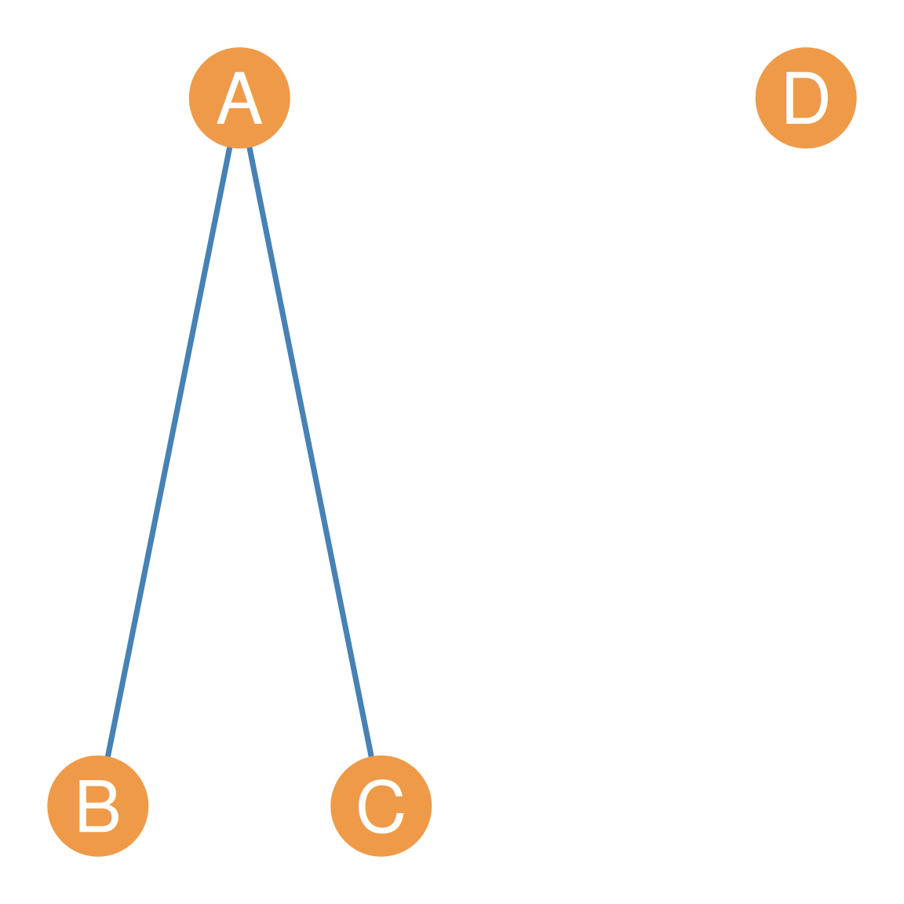
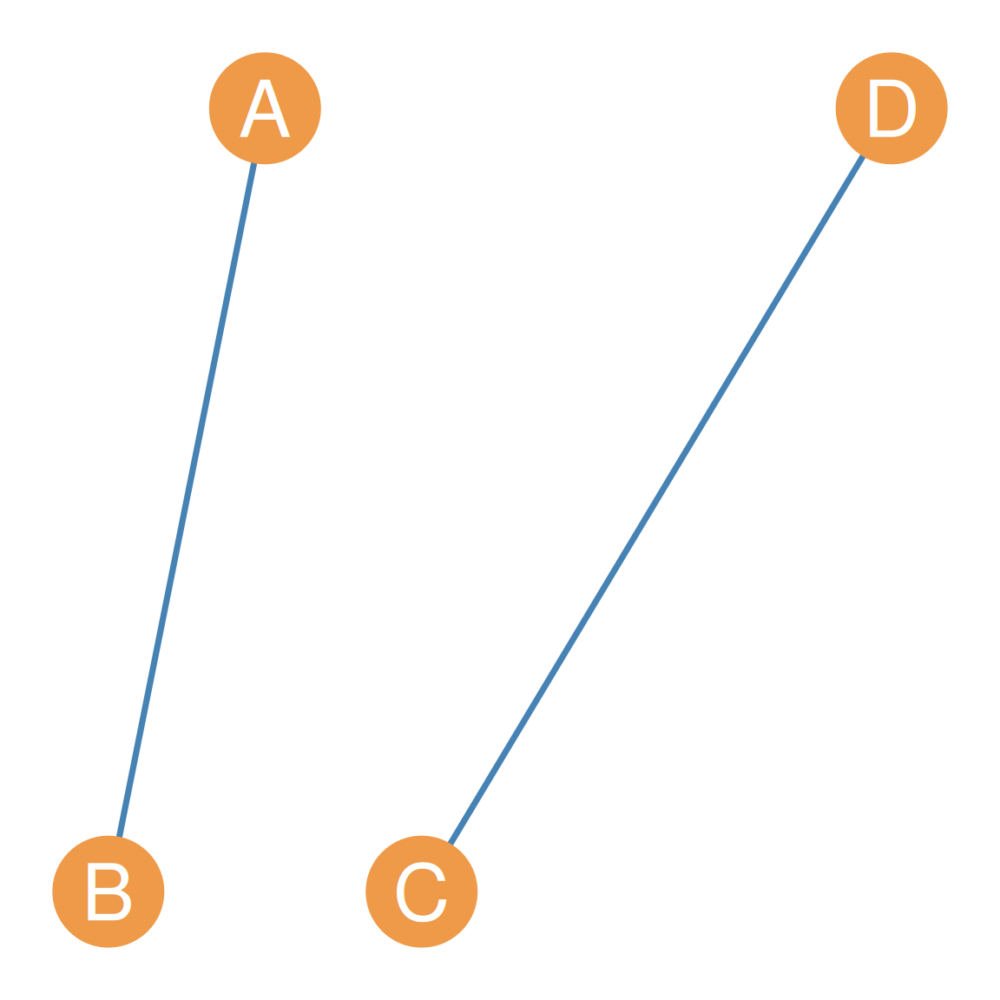
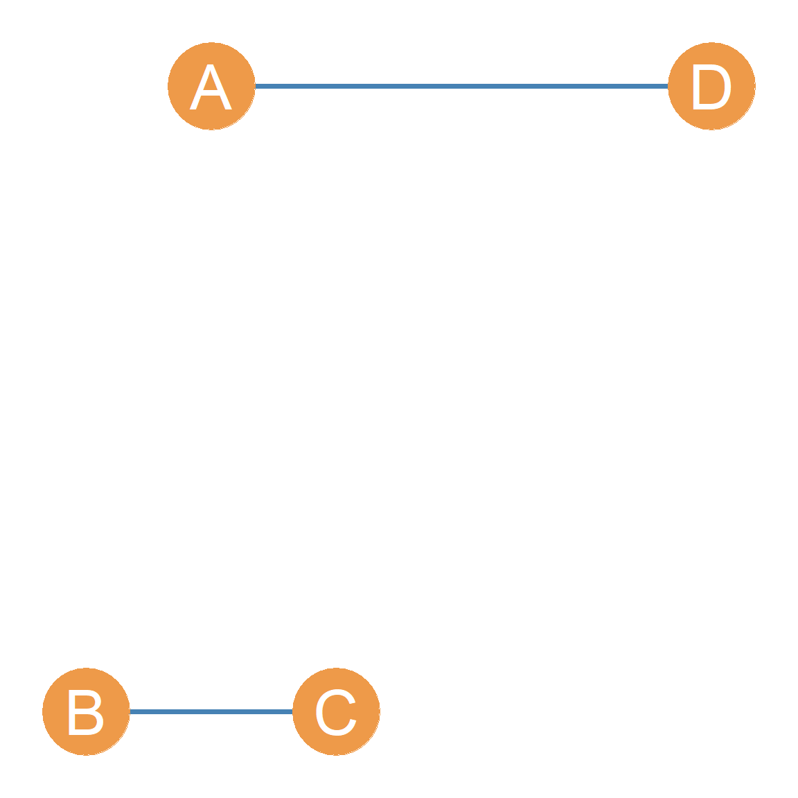
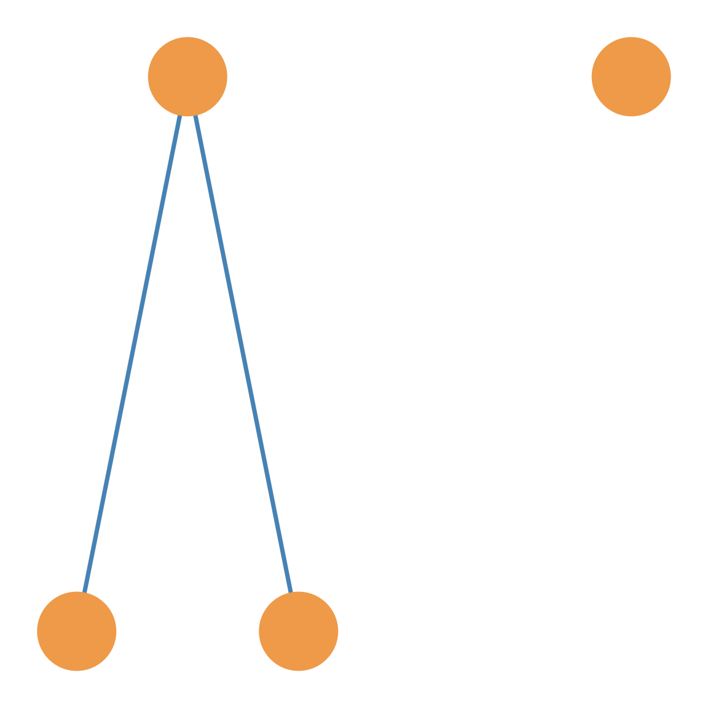
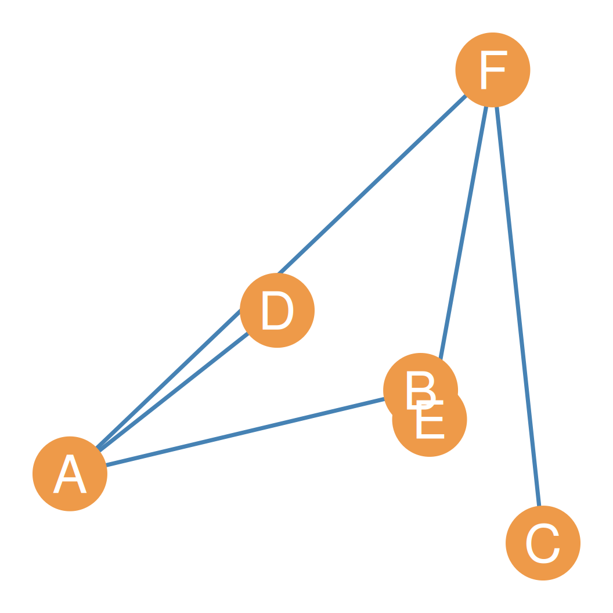
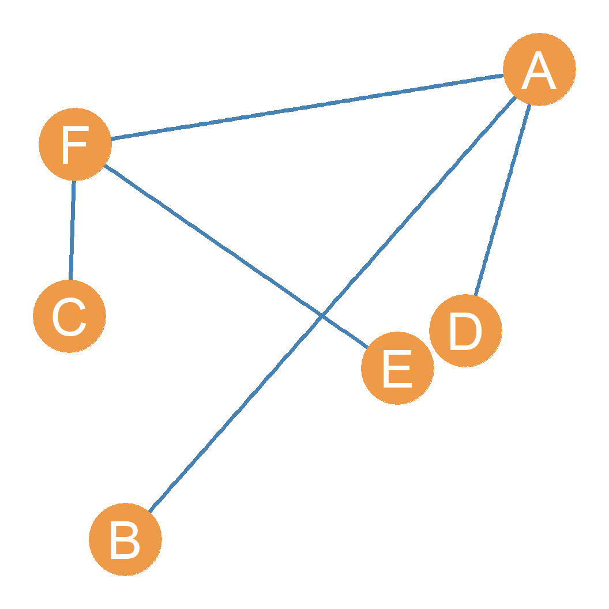
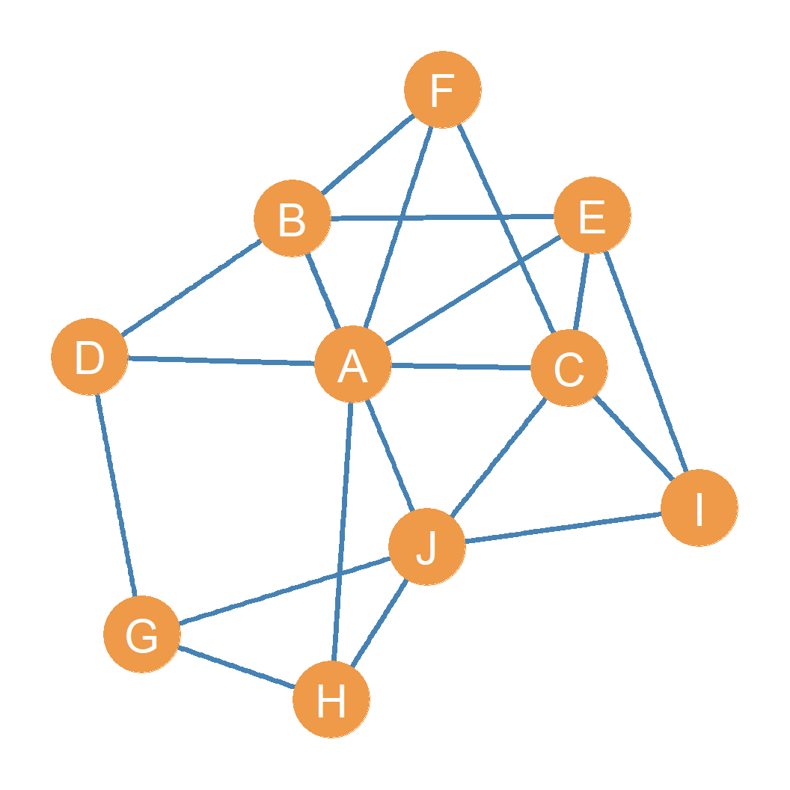

Graph Theory
The Basics of Social Network Analysis
What is a Graph?
- A graph (\(G\)) is an abstract mathematical object consisting of two main parts:
- A vertex set, \(V\), which contains all the nodes (actors) in the network.
- e.g., \(V = \{A, B, C, D\}\)
- An edge set, \(E\), which contains all the ties (relationships) between the nodes.
- Together, they define the graph: \(G = \{V, E\}\)
The Building Blocks: Nodes
- In social networks, nodes represent the actors
- Usually drawn as circles or points in a diagram
- Often individuals (people) or organizations (groups, companies)
- In wider applications of network science:
- Nodes can represent any entities in a system
- Examples: power generation stations, proteins, websites
The Building Blocks: Edges
- Edges represent a connection or a social tie between two nodes
- Can be a permanent relationship (e.g., “brother of”)
- Or a fleeting interaction (e.g., a text message, co-presence)
- In set theory:
- The set of edges is a collection of pairs of nodes
- If node \(A\) is linked to node \(B\), then \(AB \in E\) (or written as \(V_A V_B\))
- Edges act as channels for flows of content:
- Positive/Neutral: influence, advice, information, support, power, traffic
- Negative: disease, bullying, gossip, conflict
What is a Graph? (An Example) (1)
- Let’s define a graph \(G\) with 4 nodes (\(A, B, C, D\)) and 2 edges (\(AB, AC\)):
- \(V = \{A, B, C, D\}\)
- \(E = \{AB, AC\}\)
- \(G = \{V, E\}\)
What is a Graph? (An Example) (2)
- For the graph \(G = \{V, E\}\):
- The cardinality (number of members in a set) is denoted by \(|N|\):
- Vertex set cardinality: \(|V| = n = 4\)
- Edge set cardinality: \(|E| = m = 2\)
What is a Graph? (An Example) (3)
- This graph can be represented by the signature \(G(n, m) = G(4, 2)\)
- Note the lack of edges:
- No edge between \(B\) and \(C\) means no relationship between them.
- Node \(D\) is not connected to any other node.
Variations of \(G(4, 2)\)
- The signature \(G(4, 2)\) (4 nodes, 2 edges) does not uniquely define a single graph.
- It can describe multiple topologically distinct graphs.
G(4, 2) Variation 1

G(4, 2) Variation 2

G(4, 2) Variation 3

G(4, 2) Variation 4 (Unlabeled)

Graph Labeling
- Labeled Graphs:
- Distinctions are made between nodes (e.g., A, B, C are different people).
- Swapping node names mathematically changes the graph.
- Unlabeled Graphs:
- Nodes are interchangeable or anonymous.
- The focus is strictly on the abstract structure of connections.
Trivial Graphs
- Trivial Graph:
- A \(G(1, 0)\) graph: a single isolated node with zero connections.
- Social equivalent: An isolated person with no connections to others.
- Non-Trivial Graphs:
- Any graph larger than \(G(1, 0)\) used for social network analysis.
- Connected Dyad: The \(G(2, 1)\) graph. Two nodes connected by a single link. The “hydrogen atom” of society.
- Disconnected Dyad: A \(G(2, 0)\) graph. Two nodes with no link (e.g., two people on a deserted island not speaking).
Basic Relationships Between Nodes and Edges in Graphs
- Two nodes are:
- Adjacent: If they are joined by an edge in the graph (e.g., \(A\) and \(B\)).
- Nonadjacent: If they are not joined by an edge in the graph (e.g., \(A\) and \(C\)).
- End Vertices with respect to and edge: if the lie at the ends of an edge (e.g., \(A\) and \(B\) for edge \(AB\)).
Basic Relationships Between Nodes and Edges in Graphs
- An edge is:
- Incident to a node: If it connects to that node (e.g., edge \(AB\) is incident to nodes \(A\) and \(B\)).
- Non-incident to a node: If it does not connect to that node (e.g., edge \(AB\) is non-incident to node \(C\)).
- A node is an isolate: if it has no incident edges or is not adjacent to another node (e.g., \(D\)).
The Graph Complement
- The complement (\(G'\)) of a graph \(G\) contains an edge between two nodes if and only if they are disconnected in \(G\).
- It represents the “negative” of the original graph, showing all the ties that could exist but don’t.
The Graph Complement: Example
- Let’s start with a simple graph \(G\) containing 6 nodes and 5 edges.
- Nodes \(A\) and \(F\) act as central connectors.
- This original graph has many missing edges (e.g., \(B-C\), \(D-E\)).
The Graph Complement: Example
- The complement graph \(G'\) on the right connects all pairs that were not connected in \(G\).
- Every edge present in the original graph is now missing.
- Every edge missing in the original graph is now present.
Non-Simple Graphs
- Graphs that do not meet these requirements are non-simple (or multigraphs).
- The diagram on the right shows:
- Multiple Edges: Two edges connect nodes \(A\) and \(B\).
- Loop: An edge connects node \(C\) to itself.
Graphs are Not Pictures!
- Do not confuse a mathematical “graph” (a set of two sets) with its “drawing” (a point and line plot).
- The same graph can have many different, and even misleading, drawings.
- The drawing is just a visual aid; the underlying structure is what matters.
Same Graph, Different Drawings (1)

Same Graph, Different Drawings (2)

Graphs and Subgraphs
- Sometimes we are interested in analyzing only some parts of a whole network.
- A subgraph \(G' = \{V', E'\}\) is a subset of the original graph \(G = \{V, E\}\), which is written as \(G' \subset G\):
- The node set \(V'\) is a subset of \(V\) (\(V' \subset V\)).
- The edge set \(E'\) is a subset of \(E\) (\(E' \subset E\)).
- Edges in the subgraph must have both endpoints in the node subset \(V'\).
Original Graph

A Subgraph of the Original
- Created by keeping a subset of nodes: \(V' = \{A, B, C, D, E\}\).
- Retains only edges connecting these five nodes.
- All other nodes (\(F, G, H, I, J\)) and their incident edges are removed.
Vertex-Induced Subgraphs
- A vertex-induced subgraph is created by selecting a subset of nodes (\(V' \subset V\)) and including all the edges from the original graph that connect nodes within that subset.
- This is the most common method for creating subgraphs in social network analysis.
Vertex-Induced Subgraphs: Example
- Let’s select the subset of nodes: \[V' = \{D, E, G, I\}\]
- Keeping all original edges between these nodes yields the vertex-induced subgraph on the right.
Vertex-Deleted Subgraphs
- A subgraph can be defined by deleting a set of nodes: \[G' = G - \{a, b, c\}\]
- CRITICAL RULE: Deleting nodes automatically removes all edges incident to them (edges that connect to the deleted nodes).
Vertex-Deleted Subgraphs: Example
- Example: Deleting \(\{F, G, H, I, J\}\) from the original graph.
- This removes those 5 nodes (highlighted in red, left) and all their incident edges, yielding the disconnected subgraph (right).
- This is equivalent to the vertex-induced subgraph on \(\{A, B, C, D, E\}\).
Special Cases of Vertex Deletion
- Two special cases of vertex deletion are:
- Null Graph: The subgraph that results from removing all nodes from the original graph.
- Singleton Graph (or Trivial Graph): The subgraph that results from removing all nodes except for one.
Edge-Deleted Subgraphs
- A subgraph can be defined by deleting a set of edges: \[G' = G - \{e_1, e_2, ...\}\]
- CRITICAL RULE: Nodes remain in the graph when their edges are deleted (unlike vertex deletion, which automatically deletes incident edges).
Edge-Deleted Subgraphs: Example
- Example: Deleting six specific edges from the original graph:
- \(\{AB, GJ, CI, AE, AC, CE\}\)
- Removing these edges (highlighted in red, left) keeps all 10 nodes intact, yielding the edge-deleted subgraph (right).
Spanning & Empty Subgraphs
- Two key concepts in edge deletion:
- Spanning Subgraph: A subgraph that leaves all original nodes intact, removing only edges (like the example we just saw).
- Empty Graph: The subgraph that results from removing all edges, leaving only isolated nodes.
Special Subgraphs: Ego Graph
- Ego Graph: Subgraph centered on a node (ego), containing the ego, its neighbors (alters), and all ties among them.
- Particularly useful for actor-level network analysis.
- Example: Ego graph for node D (in red) and its alters A, B, and G (in tan).
Vertex Fusion (1)
- We can construct a new graph from a graph by fusing two vertices.
- Vertex Fusion:
- Replace two original vertices with a single vertex.
- Keep the combined adjacency relations of both original vertices.
Vertex Fusion (2)
- Vertex fusion is useful in social network analysis for:
- Collapsing equivalence classes.
- Analyzing blockmodels.
- Merging groups or roles.
Set Operations on Graphs: Union
- Because graphs are defined as sets, we can perform standard set operations on them.
- Union (\(\cup\)): Combine the vertices and edges of two graphs.
- \(V(G_1 \cup G_2) = V(G_1) \cup V(G_2)\)
- \(E(G_1 \cup G_2) = E(G_1) \cup E(G_2)\)
Set Operations on Graphs: Intersection
- Intersection (\(\cap\)): Keep only the vertices and edges present in both graphs.
- \(V(G_1 \cap G_2) = V(G_1) \cap V(G_2)\)
- \(E(G_1 \cap G_2) = E(G_1) \cap E(G_2)\)